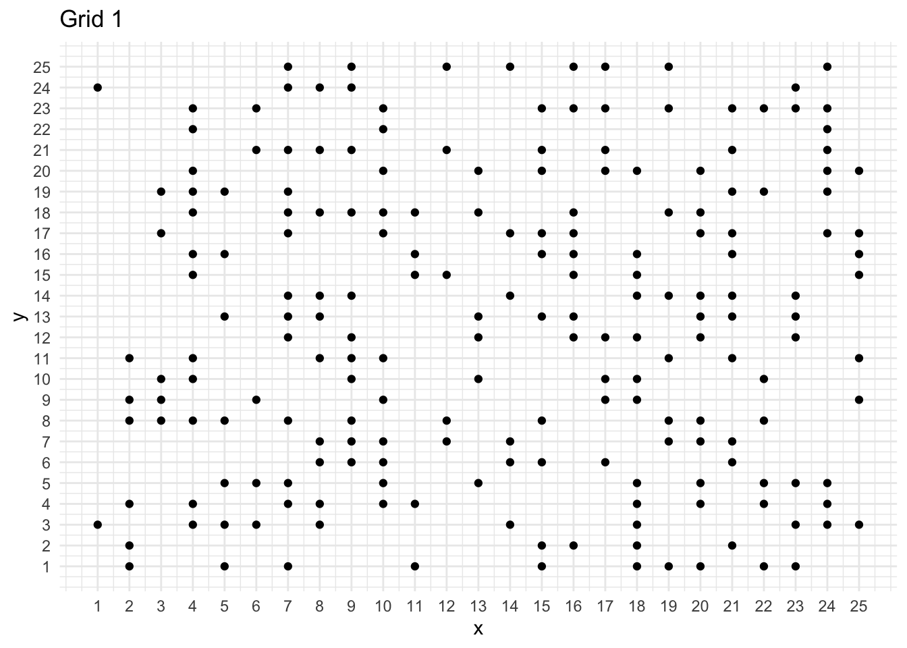

Keren Xu
about
posts
projects
CV
phd-pipeline
Categories
All
(7)
notes
(4)
presentations
(3)
r
(7)
USCbiostats R Bootcamp for Scientific Computing 2020
0 min
presentations
r
a workshop on automatic reports with rmarkdown
Keren Xu
Aug 13, 2020
Urn Problem
4 min
notes
r
an idealized mental exercise
Keren Xu
May 1, 2020

Test Random Pattern
7 min
notes
r
We have three grids available showing different patterns. How to test if the pattern is randomly distributed?
Keren Xu
May 1, 2020
A Riddler Problem
6 min
notes
r
Consider a game of chance called left, right, center. Everyone sits in a circle and begins with some $1 bills …
Keren Xu
May 1, 2020
Zoom Talk Draw Fractals from Root Finding Iterations
2 min
presentations
r
use NewtonRaphson root finding methods to draw fractals for complex functions
Keren Xu
Apr 23, 2020
Golf Balls Simulation
3 min
notes
r
simulation-based hypothesis tests
Keren Xu
Feb 2, 2020
R Talk RLadies Pasadena
0 min
presentations
r
A presentation about building a personal website by using blogdown
Keren Xu
Nov 17, 2019
No matching items